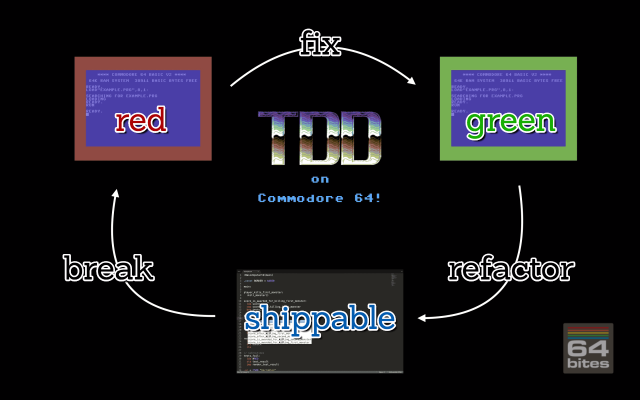
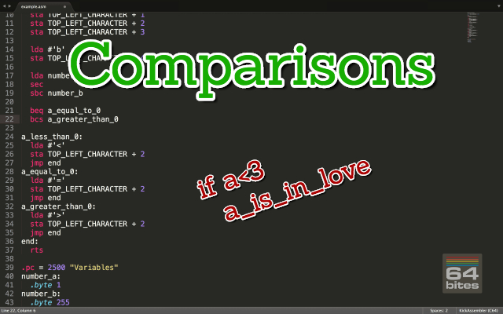
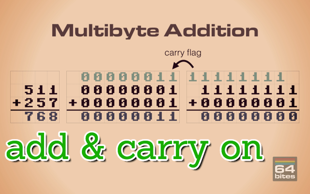

The easiest way to start programming Commodore 64
Learn BASIC and 6502 Assembly with bite-sized video tutorials.
Binge-watch previous episodes today!
Season 2 - Arithmetic, Macros and Pseudocommands

Here's what you'll get:
- 9 videos (40+ minutes in total)
- transcripts (11000+ words)
- source code examples (4500+ LOC)
- access to 64bitesVIP Facebook group, where you can get help
- plenty of exercises to solve on your own
- online streaming
- download with no DRM
- one time payment (no monthly/annual fees)
You WILL learn following in Assembly:
- How to ADD 8, 16, or 32-bit bit numbers with or without carry
- Different ways of representing negative numbers in binary
- Why subtraction is just an addition in disguise
- All of that explained in examples based on situations found in computer games
- How BNE, BVC, BCS and others can be used to make decisions in your programs
- Compare numbers with CMP and SBC, and why it's not that simple.
- How to create and use a small TDD framework with macros in Assembly
- Make it even better with pseudo-commands
- What are the Compilation-Time Metaprograming techniques in KickAssembler
- How to use them for Compilation-Time TDD
- Creating loops, unrolling them and making the self-modifying code
See what others are saying!
I learned assembly the hard way, with only limited documentation. Although part of the fun is in discovering all these things yourself, I think such screencasts could have helped me in getting up to speed faster. They do contain some nice bits of information :)

- Paul Koller
Game Developer, Creator of C64anabalt, Super Bread Box and Micro Hexagon
64bites brings me closer to understanding a computer I learned to love long ago, and still do. More than anything, it is really fun to follow the lessons and I always look forward to the next episode with great anticipation. It is the best thing since chocolate.

- Sebastian Kostka
Online Marketing Wizard at MeMyselfAndUs
I enjoyed both narration and realisation.
Actually, I was really shocked to have so much fun watching a programming screencast!

- Robert Lapinski
CEO of Idea Head, Mastermind behind the Pixel Magazine
How much time did you spend playing games on your Commodore c64? 64bites is more than 8-bit childhood memories, its a way to keep your beloved C64 alive, let's make our own game with it.
This is really cool. I don't know exactly how popular it will end up being, but there is always room online for things like this.

- Peter Cooper
Founder at Cooper Press, Chair of O'Reilly Fluent Conference
Having watched a few episodes, I reiterate my original position: sooooooo coool. And Michal have really done a top-notch job on writing, production, audio, everything.

- Avdi Grimm
Creator of the best selling programming screencast series - RubyTapas
All Episodes in this Season
Episode #018 - Pseudo Commands
Today we'll learn about .pseudocommand directive in KickAssembler. It allows us to make more robust macros that can work with different addressing modes and behave like a built in assembly instructions.
Episode #017 - Loops in Assembly
In which we will learn about absolute indexed mode to access memory sequentially. We will also create self-modyfing code. On top of that we will figure out how and why should we use loop unrolling.
Episode #016 - Compile Time TDD
On top of being awesome, KickAssembler's scripting language has two simple but powerful directives - .assert and .asserterror.We can use both to do compile-time Test Driven Development, and make sure our functions work and macros generate valid code.

Episode #015 - Metaprogramming
The KickAssembler has one exclusive feature that allows for really powerful compile-time metaprogramming. It has a built-in programming language that can be used to generate assembly.In this episode we'll see how we can use it to make our code cleaner and more robust.

Episode #014 - TDD with Macros
Have you ever thought of doing Test Driven Development on Commodore 64?It's not only possible, but surprisingly simple and rewarding. In this episode, with the help of macros, we'll build a very minimal testing framework and use it to test-drive our code.

Episode #013 - Comparisons
In this episode we'll learn the remaining Z flag along with it's BEQ and BNE instructions. We'll also try to compare arbitrary numbers using subtraction and CMP command, which only seems to be straightforward. 
Episode #012 - Decisions
Did you know you can use the carry flag to signify an overflow in unsigned integer operations. But wait, there's more. We also have other flags like V, or N and we can use them to make decisions in our programs.
Episode #011 - Captivity of Negativity
This one teaches not only how to subtract numbers on Commodore 64. It also shows different ways of representing negative numbers in binary and explains reasons why borrow in subtraction is defined as 1 - carry.
Episode #010 - Add and Carry On
Often in games we need to track various numbers. Score, number of lives, amount of fuel, experience points, or even the position of the player are just few examples. Therefore it's a good idea to learn commands that allow us to modify these numbers. 